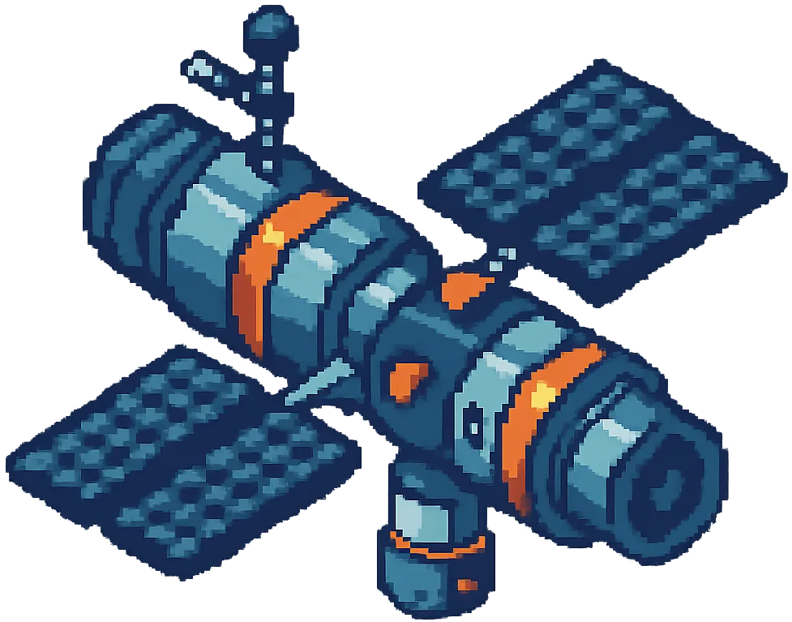

Chyba 404 - Vesmír nenalezen

Houstone, máme problém. Stránka, kterou hledáme, se ztratila ve vesmíru.
Houstone, máme problém. Stránka, kterou hledáme, se ztratila ve vesmíru.
Náš satelit zachytil signál s požadavkem, ale hledaný cíl se nepodařilo lokalizovat. Zdravím pozemšťany, hack the planet! Přepínám.